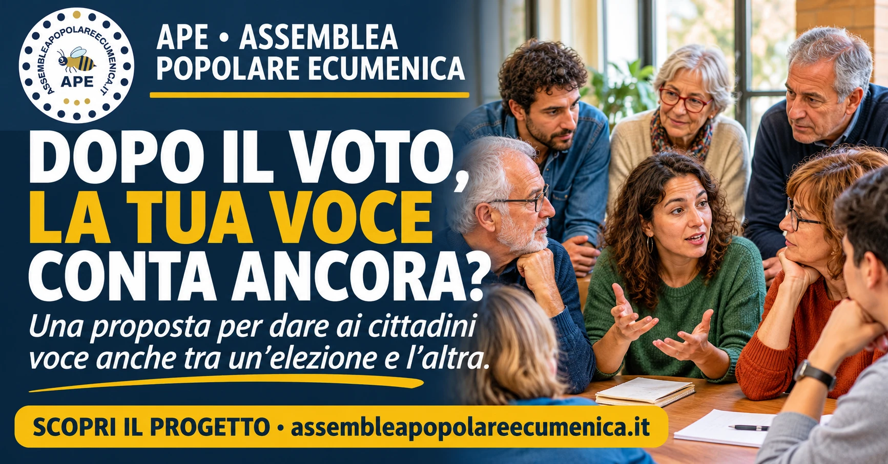
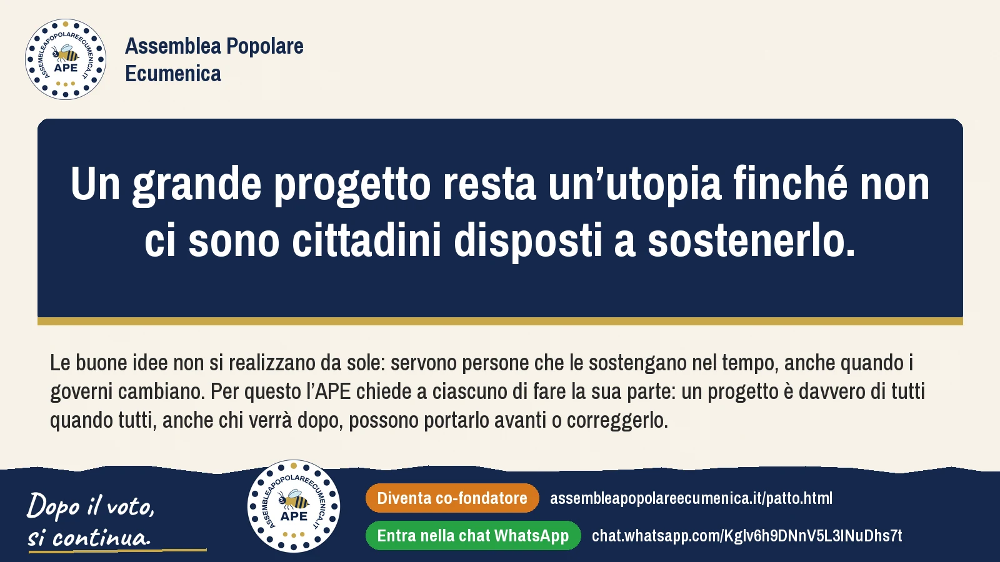
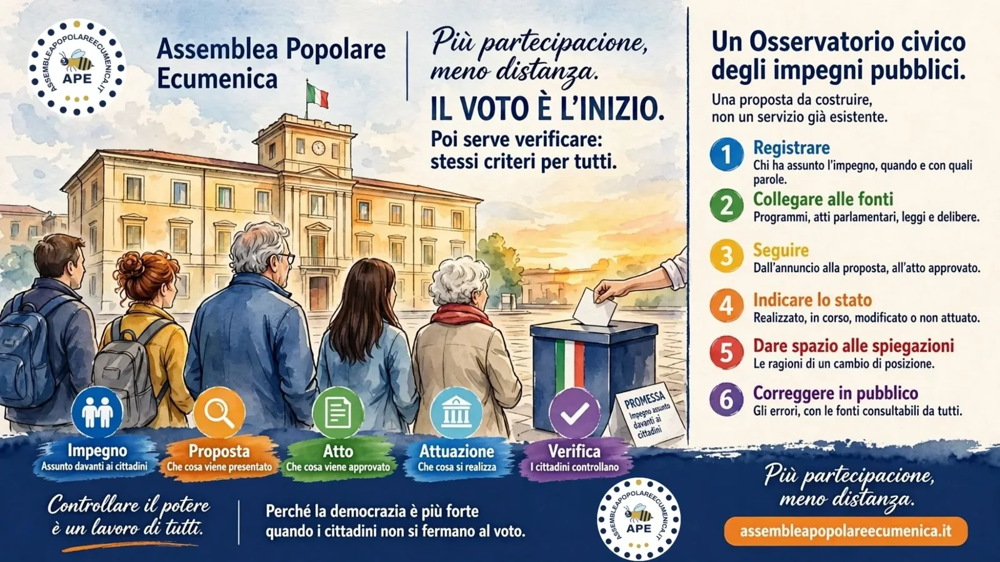
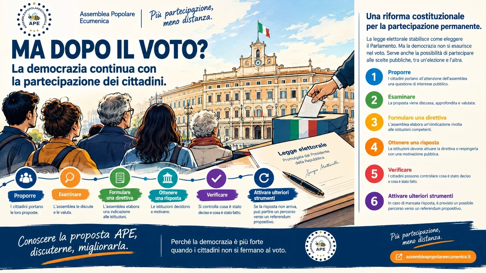

Attualità: le notizie del giorno, lette con una sola domanda: dopo il voto, quanto contano i cittadini?

10 novembre 2026
Se cambiassimo tutti i politici, avremmo risolto il problema?
Ogni volta speriamo che quelli nuovi siano diversi. Poi passa il tempo, e la speranza si consuma. Forse il punto non è soltanto chi si siede alla scrivania, ma cosa possiamo fare noi quando qualcuno è già seduto.
Immagini generate con l’intelligenza artificiale; voce di sintesi.
L’APE — Assemblea Popolare Ecumenica — propone cittadini estratti a sorte, senza campagna elettorale da vincere, che studiano i problemi e formulano una direttiva: le istituzioni la attuano oppure spiegano pubblicamente perché non lo fanno. Non è un partito e non è un nemico del Parlamento: è una possibilità in più di partecipare.
Che cosa è e che cosa non è. Non è ancora legge: è un progetto da fondare insieme. L’adesione è gratuita e alla pari.
Date delle elezioni politiche citate nel video: 9–10 aprile 2006, 13–14 aprile 2008, 24–25 febbraio 2013, 4 marzo 2018, 25 settembre 2022 (fonte: Ministero dell’Interno, archivio storico Eligendo).
Trascrizione completa
Ogni volta speriamo che quelli nuovi siano diversi. Che mantengano le promesse. Che ascoltino davvero. Poi passa il tempo, e la speranza si consuma. Immagina una scrivania, sempre la stessa. Cambiano le persone sedute dietro: cambiano i volti, i partiti, i discorsi. Ma le regole di quella scrivania restano le stesse. Se cambiassimo tutti i politici, avremmo risolto il problema? Forse no. Perché il punto non è soltanto chi si siede lì. Il punto è cosa possiamo fare noi, quando qualcuno è già seduto. Immagina cittadini estratti a sorte, senza una campagna elettorale da vincere. Un’assemblea che studia i problemi e formula una direttiva. Le istituzioni la attuano, oppure spiegano pubblicamente perché non lo fanno. Non è un partito, e non è un nemico del Parlamento. È una possibilità in più di partecipare. Si chiama Àpe, Assemblea Popolare Ecumenica. Non è ancora legge: è un progetto da fondare insieme. L’adesione è gratuita e alla pari. Perché la democrazia non finisce quando si chiudono le urne.
Una riforma che riduce il potere del Parlamento deve essere approvata dal Parlamento. Come si fa?
APE spiegata a puntate: un video al giorno dal 22 ottobre. Puntata 19 di 28.
Spot 19 di 28. Video con voce di sintesi e immagini generate con l’intelligenza artificiale.
È il paradosso di ogni riforma: una riforma che riduce il potere del Parlamento deve essere approvata dal Parlamento.
La strada istituzionale è la legge di iniziativa popolare, articolo 71 della Costituzione, con 50.000 firme autenticate. Obbliga il Parlamento a ricevere il testo, non ad approvarlo.
La strada popolare: 50.000 è la soglia giuridica, l'obiettivo dichiarato è dieci volte tanto. Mezzo milione di firme non aggiunge poteri, ma nessun Parlamento ignora una mobilitazione di quella dimensione senza pagarne il prezzo.
Chi vogliamo raggiungere? I venti milioni di cittadini che non votano più.
La raccolta delle firme non è ancora partita. Quando parte, lo annunciamo qui.
La legge elettorale decide come eleggere i rappresentanti. Ma chi garantisce al popolo sovrano una voce dopo averli eletti?
Video di 52 secondi. Personaggi di fantasia; immagini e voci generate con l’intelligenza artificiale (voci: ElevenLabs).
La riforma elettorale è legge (Legge n. 180 del 9 ottobre 2026) e si discute di collegi, preferenze e maggioranze. La Costituzione dice che la sovranità appartiene al popolo, che la esercita nelle forme e nei limiti della Costituzione, e tutela il libero mandato dei parlamentari.
Dopo il voto i cittadini possono protestare, organizzarsi, cambiare voto alle elezioni successive. Ma non hanno uno strumento per ottenere dalle istituzioni una risposta nel merito.
La proposta APE. Assemblee di cittadini estratti a sorte secondo regole pubbliche, senza campagne elettorali e senza carriere da costruire. Le assemblee formulano direttive; le istituzioni le attuano oppure motivano pubblicamente perché non lo fanno. Non un partito e non un avversario del Parlamento: una garanzia democratica che vale chiunque governi.
Che cosa è e che cosa non è. È una proposta di riforma, non una legge in vigore.
Fonte: Camera dei deputati, scheda AC 2822 (Legge n. 180 del 9 ottobre 2026, Gazzetta Ufficiale n. 235 del 9 ottobre 2026).
L'APE non è un partito. Non sostituisce il Parlamento. Non governa.
APE spiegata a puntate: un video al giorno dal 22 ottobre. Puntata 18 di 28.
Spot 18 di 28. Video con voce di sintesi e immagini generate con l’intelligenza artificiale.
L’APE non è un partito e non governa: la proposta affianca alla rappresentanza elettiva una struttura permanente di partecipazione popolare. In questa puntata, tre chiarimenti per capire il suo ruolo.
È una proposta di riforma, non una legge in vigore.
Daniele Tandura spiega in 11 minuti, con parole sue, che cosa propone l’APE e perché sostenerla. È un intervento personale: le valutazioni sui partiti e sulla situazione politica sono sue, la proposta è quella del progetto APE.
La proposta in breve: assemblee popolari comunali, regionali e nazionale, composte da cittadini estratti a sorte tra chi ha la tessera elettorale, nel rispetto dell’equilibrio di sesso, età e territorio. Il loro compito è controllare che i programmi di chi governa vengano attuati e portare al Parlamento le istanze dal basso. Il Parlamento deve rispondere in tempi ristretti; se la risposta è negativa, l’assemblea può indire un referendum deliberativo, senza quorum. Tra le idee illustrate, anche una sola Camera, con un controllo dei cittadini. Il relatore invita poi ad approfondire sul sito dell’APE, a iscriversi come fondatori e a firmare le richieste di modifica costituzionale quando arriveranno, per rafforzare l’articolo 1: la sovranità appartiene al popolo.
Che cosa è e che cosa non è. È la proposta del progetto APE, non una procedura in vigore: oggi l’APE è una proposta di riforma costituzionale e può diventare legge solo con le firme dei cittadini.
Cosa succede se chi governa ignora una direttiva dei cittadini?
APE spiegata a puntate: un video al giorno dal 22 ottobre. Puntata 17 di 28.
Spot 17 di 28. Video con voce di sintesi e immagini generate con l’intelligenza artificiale.
Se la Camera o il Governo restano fermi per 120 giorni, senza attuare una direttiva dell'APE e senza spiegare il rifiuto, scatta la Legge C.
L'APEN, con i due terzi dei componenti, oppure 500.000 cittadini possono chiedere un referendum. Vale senza quorum di partecipazione. Se passa, il Governo ha 180 giorni per attuare la direttiva.
L'idea non è nuova. Il 21 febbraio 2019 la Camera dei deputati ha approvato in prima lettura una riforma dell'articolo 71 che introduceva il referendum propositivo. Poi l'iter si è fermato al Senato.
E il quorum? I referendum costituzionali sono già validi qualunque sia l'affluenza. Al referendum costituzionale di marzo 2026 ha votato il 58,9%, contro il 29,8% dei referendum abrogativi del 2025, che hanno il quorum.
L'Italia è l'unico Paese europeo con due Camere dai poteri identici.
APE spiegata a puntate: un video al giorno dal 22 ottobre. Puntata 16 di 28.
Spot 16 di 28. Video con voce di sintesi e immagini generate con l’intelligenza artificiale.
La Legge B abolisce il Senato e lascia una sola Camera di 400 deputati. Introduce la sfiducia costruttiva, di modello tedesco: si può sfiduciare un governo solo indicando nello stesso momento chi lo sostituisce.
Il Senato costa oggi 541 milioni l'anno. Abolirlo libera le risorse che finanziano l'APE.
Una Camera sola non è un'anomalia: Svezia, Danimarca, Finlandia, Portogallo e Nuova Zelanda sono monocamerali da decenni, senza derive autoritarie.
«Ma nel 2016 gli italiani non hanno già detto no all'abolizione del Senato?» Le analisi del voto dicono altro: il 40% di chi votò No lo fece per sfiducia verso il Governo di allora, il 32% perché la riforma era poco chiara. E quella riforma proponeva un Senato dimezzato e non elettivo, non un sistema di partecipazione popolare.
Per questo la Legge B non viaggia da sola: arriva insieme all'APE, che dà ai cittadini un canale permanente.
Il Senato costa 541 milioni l'anno. L'APE ne costa 252.
APE spiegata a puntate: un video al giorno dal 22 ottobre. Puntata 14 di 14.
Spot 14 di 14. Video con voce di sintesi e immagini generate con l’intelligenza artificiale.
Costo attuale del Senato: 541 milioni l'anno. Costo del sistema APE a regime: 252 milioni.
Con il 46,6% di quello che costa oggi il Senato si finanzia un sistema permanente con oltre seimilacinquecento assemblee e uno sportello in ogni Comune.
Come riferimento pubblico usiamo la stima più prudente: un risparmio di 250-260 milioni l'anno.
Quattro persone, una domanda: chi governa deve rispondere?
Una ragazza di diciotto anni, un pensionato, un uomo e una donna di mezza età. Quattro persone, una domanda che riguarda tutti: i cittadini possono avere più voce nelle decisioni pubbliche?
Personaggi di fantasia; immagini e voci generate con l’intelligenza artificiale.
L’APE — Assemblea Popolare Ecumenica — propone assemblee di cittadini scelti per sorteggio. Non fanno le leggi, non governano e non sostituiscono il Parlamento e le istituzioni. Il loro compito è portare le proposte dei cittadini all’attenzione di chi governa, che secondo il progetto dovrà rispondere: attuare la direttiva oppure spiegare pubblicamente perché la respinge.
E se la Camera non risponde entro 120 giorni? Il progetto prevede la possibilità di arrivare a un referendum senza quorum, alle condizioni stabilite dalla proposta.
Che cosa è e che cosa non è. Per ora è una proposta, non una legge in vigore. Non devi essere già d’accordo: devi solo conoscere il progetto e farti un’idea.
Trascrizione completa
Ho 18 anni, ho la tessera elettorale. Mi dicono vota, va bene. Ma poi? Io voto da 50 anni. Tra un’elezione e l’altra, nessuno è obbligato a risponderci. Oggi una domanda dei cittadini può essere ignorata, senza conseguenze. La proposta dell’APE, Assemblea Popolare Ecumenica. Assemblee di cittadini scelti per sorteggio. Non fanno le leggi. Non governano. Il progetto prevede che chi governa sia obbligato a rispondere: attuare la direttiva oppure spiegare pubblicamente perché la respinge. Non ogni direttiva sarà attuata, ma nessuna potrà essere ignorata in silenzio. Se la Camera non risponde entro 120 giorni, si apre la strada al referendum, senza quorum. Per ora è una proposta, non una legge in vigore. Non devi essere già d’accordo. Devi solo conoscere il progetto.
Hai una proposta per il tuo Comune? Nell'APE c'è uno sportello per te.
APE spiegata a puntate: un video al giorno dal 22 ottobre. Puntata 13 di 14.
Spot 13 di 14. Video con voce di sintesi e immagini generate con l’intelligenza artificiale.
In ogni Comune c'è un Ufficio Popolare Territoriale: sportello fisico e digitale dove ogni cittadino può depositare una proposta e vederla protocollata pubblicamente, con ricevuta.
I tempi sono fissati per legge: 15 giorni per la trasmissione all'assemblea comunale, 30 per l'esame regionale, 30 per quello nazionale. Al massimo 135 giorni, ridotti a 45 in procedura d'urgenza.
Non è che non ci importa più. È che troppe volte non ci sentiamo ascoltati. Questo video è per chi ha smesso di andare a votare per disillusione, pensando che le cose non possano cambiare. Non chiede di schierarsi con qualcuno: racconta una proposta.
Personaggi di fantasia; immagini e voce generate con l’intelligenza artificiale.
In meno di tre minuti il video spiega la proposta dell’APE, l’Assemblea Popolare Ecumenica, e perché potrebbe funzionare: chi decide non deve farsi eleggere (assemblee di cittadini scelti per sorteggio tra gli iscritti alle liste elettorali, con esclusi gli iscritti ai partiti); ogni cittadino ha uno sportello in ogni Comune, con proposta protocollata e ricevuta, e tempi massimi garantiti dalla legge; chi governa deve attuare le direttive oppure motivare pubblicamente il rifiuto. Se dopo 120 giorni le istituzioni restano ferme, i due terzi dell’assemblea nazionale oppure 500.000 cittadini possono chiedere un referendum valido senza quorum. Le sedute sono trasmesse in diretta e gli atti pubblicati entro 24 ore.
Che cosa è e che cosa non è. È il meccanismo previsto dal progetto, non una procedura in vigore: oggi l’APE è una proposta di riforma costituzionale e può diventare legge solo con le firme dei cittadini.
Trascrizione completa
Non è che non ci importa più. È che troppe volte non ci sentiamo ascoltati. Lo pensano in tanti. Chi ogni mattina si alza, lavora e manda avanti una famiglia. I giovani che non sanno più dove trovare un futuro. I genitori che fanno i conti con le spese. Gli anziani che si sentono soli. Chi segnala un problema e non vede arrivare nessuna risposta. E lo pensa anche chi alle urne non va più. Non per disinteresse, per disillusione. Se sei tra loro, questo messaggio è per te. Non vogliamo dirti che la politica è tutta uguale. Non vogliamo chiederti di schierarti con qualcuno. Vogliamo farti una domanda diversa. E se i cittadini potessero avere una voce anche dopo aver votato? Da qui nasce una proposta. APE, Assemblea Popolare Ecumenica. Ecumenica qui non vuol dire religiosa. Vuol dire aperta a tutti, senza distinzioni. Come funziona? In ogni comune, in ogni regione e a livello nazionale, ci sarebbero assemblee permanenti di cittadini scelti per sorteggio tra gli iscritti alle liste elettorali. Non si candidano. Vengono estratti con equilibrio di età, genere e territorio. E chi è iscritto a un partito non può essere sorteggiato. Perché APE può farlo quando oggi non succede? Perché cambia tre cose. La prima. Chi decide non deve farsi eleggere. I sorteggiati non fanno campagna elettorale e non rispondono a un partito. Sono cittadini come te. La seconda. Ogni cittadino ha uno sportello. In ogni comune ci sarebbe un ufficio dove depositare una proposta, protocollata pubblicamente con ricevuta. E arriva alle assemblee entro tempi fissati per legge. Al massimo 135 giorni. La terza. Chi governa non può far finta di niente. Le assemblee approvano direttive e il governo o gli enti locali devono attuarle. Oppure motivare pubblicamente il rifiuto. Oggi una domanda dei cittadini può essere ignorata a costo zero. Con questo meccanismo no. E se le istituzioni restano ferme? Dopo 120 giorni, i due terzi dell'assemblea nazionale oppure 500.000 cittadini possono chiedere un referendum valido senza quorum. Tutto in pubblico. Le sedute sono trasmesse in diretta e gli atti pubblicati entro 24 ore. Non promettiamo miracoli e non chiediamo fiducia sulla parola. Chiediamo di conoscere la proposta, discuterla e valutarla insieme. Anche per dire che non ti convince. Un paese non è fatto soltanto da chi governa. È fatto soprattutto da chi ogni giorno lo manda avanti e merita di essere ascoltato. Per ora è una proposta, non una legge in vigore. Scopri il progetto su assembleapopolareecumenica.it
Il sorteggio non è un'idea nuova. Lo usavano ad Atene 2.500 anni fa.
APE spiegata a puntate: un video al giorno dal 22 ottobre. Puntata 11 di 14.
Spot 11 di 14. Video con voce di sintesi e immagini generate con l’intelligenza artificiale.
Nell'Atene del V secolo la gran parte delle cariche pubbliche era assegnata per sorteggio. Aristotele scrive che il sorteggio è il metodo democratico e l'elezione è quello oligarchico, perché seleziona i notabili.
Oggi, in Italia, lo stesso principio regola le giurie popolari nelle Corti d'Assise: nessuno vota per diventare giudice popolare, e per questo risponde solo alla propria coscienza.
Nell'APE i mandati sono brevi, al massimo due nella vita.
Tra un’elezione e l’altra, come fa un cittadino a farsi ascoltare? Una famiglia a tavola, la televisione che parla di guerra e di soldi per la difesa, due opinioni diverse: il video parte da qui per ricordare che le decisioni pubbliche entrano nella vita di tutti, anche di chi la pensa in modo diverso.
Personaggi di fantasia; immagini e voci generate con l’intelligenza artificiale. Le due opinioni sul tema della guerra sono di personaggi inventati: l’APE non è un partito e non prende posizione.
In tre minuti il video racconta la proposta dell’APE, l’Assemblea Popolare Ecumenica: assemblee di cittadini estratti a sorte, non scelti con candidature; un ufficio in ogni Comune dove presentare una proposta e ricevere una risposta pubblica; e, se dopo 120 giorni una direttiva dell’Assemblea nazionale resta senza seguito e senza un rifiuto motivato, la possibilità che i due terzi dei componenti oppure 500.000 cittadini chiedano il voto popolare, senza quorum.
Che cosa è e che cosa non è. È il meccanismo previsto dal progetto, non una procedura in vigore: oggi l’APE è una proposta e può diventare legge solo con le firme dei cittadini. Il progetto non elimina la rappresentanza: il Parlamento resta, con una sola Camera, e prevede anche l’abolizione del Senato. Il video cita un dato: alle politiche del 2022 oltre 20 milioni di italiani non andarono a votare.
Trascrizione completa
È sera. Una famiglia è seduta a tavola. In televisione parlano della guerra in Ucraina, dell'invio di altre armi, dei soldi da destinare alla difesa. Secondo me dobbiamo aiutare l'Ucraina. Io mi chiedo dove troveremo tutti quei soldi. E se non ci siano altre strade? La figlia ascolta. Non interviene. Non tutti devono pensarla allo stesso modo. Ma qualunque sia la loro opinione, le decisioni pubbliche entrano nella vita di quella famiglia. Non si parla soltanto di guerra, di sanità, di scuola, di lavoro, di tasse. Decisioni che sembrano lontane. Ma poi arrivano vicino. Molto vicino. Basta poco per accorgersene. Allora viene spontanea una domanda. Possiamo essere in disaccordo su tutto. Ma perché la nostra voce dovrebbe fermarsi al momento del voto? Alle elezioni scegliamo chi ci rappresenta. Ma tra un'elezione e l'altra, come fa un cittadino a farsi ascoltare? Alle politiche del 2022, oltre 20 milioni di italiani non andarono a votare. Non sappiamo perché. Ma è una domanda che non possiamo ignorare. Da questa domanda nasce una proposta. L'APE, Assemblea Popolare Ecumenica. Una proposta per partecipare anche tra un'elezione e l'altra. Come funzionerebbe? Il progetto prevede assemblee di cittadini estratti a sorte, non scelti con candidature. Un ufficio in ogni comune, dove presentare una proposta e ricevere una risposta pubblica. Se, dopo 120 giorni, una direttiva dell'Assemblea nazionale resta senza seguito e senza un rifiuto motivato, i due terzi dei componenti oppure 500.000 cittadini possono chiedere che venga sottoposta al voto popolare. Senza quorum. È il meccanismo previsto dal progetto, non una procedura in vigore. A marzo 2026, gli italiani hanno votato il referendum costituzionale confermativo sulla giustizia, su una legge già approvata dal Parlamento. Il percorso dell'APE è diverso. Il progetto non elimina la rappresentanza. Il Parlamento resta, ma con una sola Camera. Prevede infatti anche l'abolizione del Senato. Torniamo a quella famiglia. Le opinioni restano diverse, ma forse la domanda più importante non è chi abbia ragione. È se ciascuno possa davvero farsi ascoltare. Non devi essere d'accordo con tutti. Devi poter contare quanto gli altri, perché le decisioni riguardano anche te. Anche la tua voce deve poter arrivare dove si decide. APE siamo noi. Assembleapopolareecumenica.it Per ora l'APE è una proposta. Con le firme dei cittadini può diventare legge.
Chi non fa mai politica può sedersi in assemblea. Ecco come.
APE spiegata a puntate: un video al giorno dal 22 ottobre. Puntata 6 di 14.
Spot 6 di 14. Video con voce di sintesi e immagini generate con l’intelligenza artificiale.
Oggi sceglie chi sa farsi eleggere. Nell'APE i componenti sono sorteggiati tra gli iscritti alle liste elettorali, con equilibrio di età, genere e territorio.
Così entrano anche i giovani, le donne, chi vive nei piccoli Comuni, chi non ha tempo né mezzi per una campagna elettorale.
Il sorteggio non seleziona chi sa farsi eleggere. Seleziona un campione che assomiglia al Paese reale.
Nessuna comunità è troppo piccola per essere ascoltata
Se la sovranità appartiene al popolo, quali strumenti gli stiamo dando per esercitarla?
Video di due minuti e mezzo con sottotitoli. Voce di sintesi (ElevenLabs) e immagini generate con l’intelligenza artificiale.
Pensa a un problema che vedi ogni giorno sotto casa: un lampione che non si accende, una scuola con le impalcature da anni, un paese dove i giovani non trovano niente da fare. Ne hai parlato in famiglia, al bar, in un gruppo. Poi, quasi sempre, non è successo niente.
L'articolo 1 della Costituzione dice: «La sovranità appartiene al popolo, che la esercita nelle forme e nei limiti della Costituzione.» Il popolo, cioè te. Cioè noi.
Votare è un diritto prezioso. Ma dopo il voto, a chi puoi rivolgerti? Per questo serve l'Assemblea Popolare Ecumenica: non un partito, ma uno spazio dove le persone si incontrano, verificano i fatti, scrivono una proposta chiara e la portano a chi può decidere.
E poi si dice a che punto siamo: cosa è stato raccolto, chi è stato coinvolto, quale risposta è arrivata, cosa ancora blocca. Le istituzioni restano responsabili delle loro scelte; ma nessuna richiesta dovrebbe sparire nel silenzio. Ascoltare. Agire. Rendere conto.
Da solo puoi essere ignorato. Insieme puoi farti ascoltare. Nessuna comunità è troppo piccola per essere ascoltata.
APE spiegata a puntate: un video al giorno dal 22 ottobre. Puntata 5 di 14.
Spot 5 di 14. Video con voce di sintesi e immagini generate con l’intelligenza artificiale.
Nell'assemblea non entri perché hai una tessera, un'idea politica o una fede. Entri perché sei cittadino italiano iscritto alle liste elettorali e il sorteggio ti sceglie.
Puoi essere di destra o di sinistra, credente o no, del Nord o del Sud. Conta la cittadinanza, non l'appartenenza.
Questo vuol dire «ecumenica»: tutti, senza distinzioni.
Chi governa ascolta chi vive i problemi ogni giorno? Antonio, cittadino, parla da Piazza Cavour, a Napoli: uno spazio che doveva essere un parco giochi gratuito, i paletti nei vicoletti del Rione Sanità, la RC Auto, la sanità pubblica, le banche. Sono sue opinioni, dette con le sue parole; i numeri che cita sono suoi e non sono stati verificati.
Voce di un cittadino: opinione personale. L’APE non è un partito e non prende posizione.
Quello che chiede lo dice alla fine: proteste pacifiche, giuste, equilibrate e moderate, e una politica che faccia «una presa di coscienza», perché «la corda non si può tirare troppo» e una politica più equilibrata evita «feriti, morti».
Perché lo pubblichiamo. L’APE non prende posizione su partiti, governi o singoli problemi. Propone invece un modo perché voci come questa abbiano una risposta: assemblee di cittadini comuni, estratti a sorte, che mandano direttive a Comuni, Regioni e Governo. Chi governa deve rispondere: sì, oppure con un no motivato in pubblico. Oggi è una proposta, non è ancora legge.
Trascrizione completa
Ecco qua, ci troviamo a Piazza Cavour, qua doveva essere praticamente un parco giochi e invece avete visto come stiamo combinati. Adesso se lo stesso posto non stava dove sta il Rione Sanità ma stava in un posto più chic sarebbe stato tutto bello, curato, perché là ci sono le classi privilegiate. Insomma, noi stiamo vivendo a Napoli e anche nelle altre città un momento storico dove c'è proprio un attacco da parte delle istituzioni contro le classi meno agiate e soprattutto a Napoli.
Facciamo per esempio un esempio. Qua dovrebbe venire un parco gioco, gratuito ovviamente, per tutti i cittadini, già tutto intorno, già ci sono le strisce blu, perché ovviamente le categorie che hanno la possibilità economica si devono fermare proprio vicino al parco e le categorie meno privilegiate devono stare indietro. Insomma, per farvi un altro esempio, da 15 anni l'RC Auto a Napoli è salita, con dei prezzi sbalorditivi.
Che cosa ha dovuto fare questo popolo per legittima difesa? Ha dovuto praticamente comprare le auto, ovviamente serve auto di poco valore, intestarle alle agenzie in Polonia per poi noleggiare le stesse da loro. Vedete un po' questo popolo che cosa è costretto a fare? Allora io invito proprio le istituzioni a tener conto di questo, perché le persone sono stanche, non è che possiamo fare una politica solamente per le categorie privilegiate, qua c'è una tendenza politica ad aiutare solo le lobby, lo facciamo con le guerre aiutando i fornitori di armi Lo facciamo con la sanità facendo in modo che chi non ha i soldi non si può curare nelle sanità pubbliche o che deve attendere delle file enormi ed è costretto ad andare nelle cliniche o in molti casi deve pagare l'azienda privata tipo come l'intramoenia all'interno delle strutture pubbliche pagate dai cittadini cioè mi sembra un po' esagerato questo modo di gestire una comunità, una civiltà praticamente.
Come si può immaginare che il popolo possa accettare tutta una serie di umiliazioni? Come è possibile? Io credo che non sia possibile. Faccio un altro esempio. Questo quartiere qua dietro, che si chiama Rione Sanità, è stato costruito quando l'auto non stava neanche nell'immaginazione. Quindi i vicoletti sono stretti. Che fa il Comune? Piazza, i paletti per non far parcheggiare e un povero Cristo che deve tornare a casa, magari ha giusto i soldi per mettere la benzina, non può neanche più parcheggiare.
Ma prima di mettere i paletti, che costano dai 150 ai 300 euro ogni paletto a noi comunità. Vi siete preoccupati di fare i parcheggi alternativi? No, non vi siete preoccupati. È perché giustamente le classi privilegiate hanno il loro garage, non hanno problemi. Il problema è che gira e rigira va sempre alla categoria meno agiata. E poi di cosa vogliamo parlare? delle banche che sono super tutelate: pensa che hanno fatto l'obbligo del POS all'interno dei negozi perché le società bancarie ogni trasferimento economico ci devono guadagnare.
Abbiamo i conti correnti che costano di più di tutta l'Europa, ma secondo voi è normale. Ora dico io, è giustissimo che esistano delle manifestazioni soprattutto per l'energia elettrica che è salita a dei prezzi esagerati, il caro benzina che rende la vita ai trasportatori impossibile, le proteste ci devono essere, ovviamente devono essere delle proteste pacifiche, giuste, equilibrate, moderate, però è anche giusto che voi politici iniziasse a fare una presa di coscienza cioè la corda non si può tirare troppo a favore solo delle classi privilegiate ok, lo dico da misero sociologo che sono perché quando uno dà troppo vantaggio alle classi agiate poi succedono le rivoluzioni e ci sono feriti, morti, cose che si possono anche evitare facendo una politica più equilibrata che dia la dovuta dignità a tutti i cittadini.
Se siete d'accordo a queste parole si può anche protestare facendo un semplice commento sotto e condividendo questo video. Può darsi che qualche politico inizia ad avere una presa di coscienza. Ciao.
Una parola, tremila anni, tre significati. Il nostro è il primo.
APE spiegata a puntate: un video al giorno dal 22 ottobre. Puntata 3 di 14.
Spot 3 di 14. Video con voce di sintesi e immagini generate con l’intelligenza artificiale.
Prima era geografia: la terra abitata dagli esseri umani.
In età romana indicò il mondo unito sotto l'Impero.
Poi arrivò il significato religioso. I concili «ecumenici», da quello di Nicea nel 325 fino al Vaticano II (1962-1965), riunivano i vescovi di tutta la cristianità. Nel Novecento il «movimento ecumenico» ha aggiunto il dialogo tra chiese diverse.
Il Progetto APE riprende il significato originario: la casa comune di tutti i cittadini.
Ecumenica? Ma è un progetto religioso? No. Ti spieghiamo perché.
APE spiegata a puntate: un video al giorno, dal 22 ottobre al 4 novembre. Puntata 2 di 14.
Spot 2 di 14. Video con voce di sintesi e immagini generate con l’intelligenza artificiale.
È un equivoco comprensibile, e preferiamo chiarirlo subito.
«Ecumenica» viene dal greco oikouméne, la terra abitata. Viene da oîkos, la casa. Per gli antichi geografi greci era l'insieme delle terre dove vivono gli esseri umani.
Nel Progetto APE ha questo significato: civile, non religioso. Un'assemblea della casa comune, che appartiene a tutti quelli che la abitano.
Illustrazione a cura dell’APE. Creata con l’intelligenza artificiale.
Il voto è necessario, ma non basta. Le scelte di oggi ricadranno anche su chi non può ancora votare: come rendere i cittadini parte attiva delle decisioni che li riguardano?
Un grande progetto resta un’utopia finché non ci sono cittadini disposti a sostenerlo.
Entra nella chat WhatsApp → In chat il tuo numero di telefono è visibile agli altri partecipanti; l’ingresso lo approvano gli amministratori.
«Un politico pensa alle prossime elezioni; uno statista alla prossima generazione. Un politico cerca il successo del suo partito; lo statista quello del suo paese.»
È una frase del teologo americano James Freeman Clarke (fine Ottocento), spesso attribuita ad Alcide De Gasperi. Al di là di chi l'abbia scritta, pone una domanda che resta attuale: chi governa deve preoccuparsi soltanto del consenso immediato, o anche delle conseguenze delle proprie decisioni?
Il problema riguarda tutti
Una scelta politica può produrre risultati in pochi mesi, ma anche condizionare per decenni il debito pubblico, la scuola, la sanità, le infrastrutture, la tutela dell'ambiente.
Chi dovrà convivere con quelle conseguenze spesso non ha ancora diritto di voto. E chi oggi può votare non sempre ha gli strumenti per intervenire sulle decisioni che vengono dopo.
Il voto è necessario, ma non basta
Con le elezioni scegliamo i nostri rappresentanti. Ma cosa succede dopo? Per anni le decisioni si prendono nelle istituzioni, e ai cittadini restano soprattutto informarsi, protestare o aspettare le elezioni successive.
Se un servizio pubblico non funziona, perché chi lo usa non dovrebbe contribuire a trovare una soluzione? Se una decisione costa molto alla collettività, perché non discuterne alternative e conseguenze prima che sia troppo tardi per cambiarla?
Non significa un referendum permanente su tutto. Significa un rapporto più continuo tra cittadini e istituzioni: la democrazia non dovrebbe limitarsi a farci scegliere chi decide, ma darci anche la possibilità di contribuire alle decisioni.
Dalla protesta alla proposta
L’Assemblea Popolare Ecumenica (APE) nasce per questo: dare ai cittadini uno strumento stabile per indicare la direzione tra un’elezione e l’altra, e fare in modo che le istituzioni rispondano. Oggi è una proposta, non è ancora legge: per esistere serve una riforma della Costituzione.
Il progetto prevede assemblee di cittadini comuni, estratti a sorte, in ogni Comune, in ogni Regione e a livello nazionale. Non fanno leggi e non governano: mandano direttive a Comuni, Regioni e Governo. Il percorso, passo per passo:
Una proposta allo sportello. Il cittadino la porta allo sportello del suo Comune, che la registra con ricevuta.
L’esame in pubblico. L’assemblea sorteggiata la esamina in sedute pubbliche, ascoltando esperti e cittadini.
La direttiva. Se la approva, diventa una direttiva, pubblicata entro 24 ore.
L’obbligo di risposta. L’istituzione deve rispondere: la attua, oppure la respinge con un voto a maggioranza assoluta e una motivazione pubblica.
La verifica. Un organo indipendente controlla che quello che è stato deciso venga fatto davvero.
Se tutto si ferma. Dopo 120 giorni si può chiedere un referendum: decidono i cittadini.
La Rete APE è aperta a chiunque voglia contribuire: associazioni, gruppi di cittadini, comitati, persone singole. Si partecipa alla pari, senza simboli e senza ruoli.
Nelle future Assemblee, invece, si entra solo per sorteggio. Così possono partecipare anche persone lontane dalla politica organizzata, senza dover appartenere a un partito né sostenere una campagna elettorale.
Non serve essere d'accordo su tutto. Serve poter discutere senza che le differenze diventino un motivo per escludersi.
Chi dà voce a chi non può ancora votare?
Nessuno sa cosa vorranno le persone che vivranno tra cinquant'anni, e non possiamo decidere al loro posto. Possiamo però valutare le conseguenze delle nostre scelte. Davanti a una decisione importante, chiediamoci:
Quali costi produrrà nel lungo periodo?
Chi ne riceverà i benefici e chi ne sosterrà gli oneri?
Esistono alternative meno gravose?
Come potremo verificare i risultati?
Stiamo lasciando a chi verrà dopo di noi la possibilità di scegliere?
Sono domande sulla qualità della vita democratica, non solo per tecnici e governanti. Per rispondere servono informazioni accessibili, trasparenza e occasioni concrete di confronto.
La continuità non ha colore politico
I governi si succedono, e con loro cambiano priorità e programmi. Un progetto che riguarda il futuro di tutti, però, non può ricominciare da zero a ogni legislatura. Se è buono, va portato avanti; se mostra dei limiti, va rivisto apertamente, alla luce dei risultati. Non va abbandonato solo perché cambia chi governa, e non va difeso a ogni costo solo perché lo ha avviato qualcuno.
L’APE non è un semplice controllo: è partecipazione vera, di tutti, anche di chi verrà dopo e prenderà il testimone. È uno spazio civico che resta, a prescindere da chi governa, dove i cittadini seguono gli impegni nel tempo, ne verificano gli esiti e correggono la rotta quando serve, e passano il progetto a chi viene dopo. Per il bene di tutti, anche di chi oggi non c’è ancora.

La responsabilità riguarda tutti, ma non allo stesso modo
Cittadini, associazioni, imprese e organizzazioni sociali contribuiscono alla vita della comunità. Ma chi esercita il potere pubblico ha una responsabilità particolare: spiegare le proprie decisioni, rendere conto delle risorse impiegate, consentire la verifica dei risultati.
La partecipazione non garantisce scelte sempre giuste e non elimina i conflitti. Offre però più possibilità di individuare gli errori e di correggerli.
La democrazia non finisce davanti all'urna
Non basta chiedere ai cittadini di interessarsi alla politica: bisogna offrire percorsi in cui l'interesse diventi proposta, confronto, dialogo con le istituzioni. Non per sostituire le istituzioni né per promettere che ogni proposta sarà accolta, ma per rafforzare il legame tra cittadini e decisioni pubbliche.
Le prossime generazioni non votano ancora. Intanto, qualcuno deve pensare a loro.
Nella Rete APE c’è un posto anche per te.Leggi il Patto e diventa co-fondatore · Entra nella chat WhatsApp. Prima di entrare in chat: il tuo numero di telefono sarà visibile agli altri partecipanti e l’ingresso viene approvato dagli amministratori.
11 ottobre 2026
Ogni passo conta. Il prossimo sei tu.
Illustrazione a cura dell’APE. Creata con l’intelligenza artificiale.
Una rete non nasce già grande. Comincia da una persona, poi da due, poi da tre, e ogni adesione pesa quanto le altre. La Rete APE cresce così, un passo alla volta. Il prossimo passo puoi farlo tu.
I sei principi del Patto
Peso paritario. Ogni aderente ha lo stesso peso nelle decisioni, qualunque sia la sua dimensione o la sua storia. Nessuna gerarchia interna.
Ecumenicità. La Rete è aperta a tutti, senza distinzioni di idee, di territorio o di condizione sociale.
Trasparenza totale. Ogni decisione e ogni accordo della Rete sono pubblici.
Priorità ai più fragili. Al centro ci sono anziani, giovani precari, persone con disabilità, lavoratori in difficoltà.
Dal basso verso l’alto. Le proposte nascono nei territori e salgono fino a diventare indirizzo.
Indipendenza. La Rete non risponde a partiti, lobby o poteri economici, ma solo a chi la compone.
Partecipare non deve costare
Nelle future Assemblee si entra per sorteggio, e il sorteggio funziona solo se può accettare chiunque. Per questo, nel progetto, ogni sorteggiato riceve un’indennità proporzionata all’impegno e chi lavora ha diritto a permessi retribuiti, come già avviene per i giudici popolari. Non è un sussidio per chi ha bisogno: spetta a tutti i sorteggiati. Serve perché partecipare non costi una giornata di lavoro non pagata: altrimenti potrebbe partecipare solo chi è economicamente indipendente, e l’Assemblea smetterebbe di essere uno specchio del Paese.
Come si fa il primo passo
Si legge il Patto fondativo e si compila il modulo sulla pagina Rete APE. L’adesione è gratuita: arriva un’email e con la conferma la firma è valida. Chi firma diventa co-fondatore, alla pari di tutti. Il nome compare nell’Albo dei co-fondatori solo con il consenso di chi firma. Si può uscire in qualunque momento, con una semplice comunicazione.
Per parlarne con chi sostiene già il progetto c’è la chat WhatsApp della Rete APE. Prima di entrare, due cose da sapere: il tuo numero di telefono sarà visibile agli altri partecipanti, e l’ingresso viene approvato dagli amministratori.
Anche con la migliore legge elettorale, chi controlla davvero il potere?

Illustrazione a cura dell’APE. Creata con l’intelligenza artificiale.
Il voto sceglie i rappresentanti. Dopo, chi controlla che rispettino gli impegni presi?
Che cosa dicono i fatti
L’articolo 67 della Costituzione stabilisce che ogni parlamentare rappresenta la Nazione ed esercita le sue funzioni senza vincolo di mandato. La disciplina di gruppo può servire ad attuare un programma; non dovrebbe diventare un mezzo per impedire ogni dissenso.
Il dissenso ha avuto un costo in schieramenti diversi: lo scontro Fini–Berlusconi nel Popolo della Libertà (2010), la sostituzione di Corradino Mineo in commissione nel Pd (2014), i componenti dissenzienti sostituiti durante l’esame dell’Italicum (2015). Sono vicende diverse, che non vanno sovrapposte.
Il libero mandato ha anche un’altra faccia. Secondo Openpolis, nella XVII legislatura (2013–2018) si registrarono 569 cambi di gruppo che coinvolsero 348 parlamentari. Il dato non dice che ogni passaggio fosse ingiustificato: dice che serve spiegarlo.
Nel febbraio 2021 la consultazione degli iscritti M5S su Draghi approvò il sostegno al governo (59,3% dei 74.537 votanti, circa il 62% degli aventi diritto); il 17 febbraio quindici senatori votarono contro la fiducia e furono annunciate le espulsioni. A dicembre 2021 il Consiglio di garanzia del Senato accolse i ricorsi di sei senatori, tra l’altro per l’assenza di un secondo grado di giudizio interno.
Nemmeno le preferenze risolvono tutto: possono aumentare i costi delle campagne e il peso delle reti locali. Le liste bloccate concentrano nei partiti la scelta degli eletti. Nell’elezione del Quirinale del 2013 Prodi ottenne 395 voti al quarto scrutinio: il voto era segreto, e il numero dei «franchi tiratori» resta una stima, non un elenco di responsabili.
Che cosa propone l’APE
Un Osservatorio civico degli impegni pubblici: un metodo accessibile, con fonti pubbliche e gli stessi criteri per tutte le forze politiche. Dovrebbe:
Registrare gli impegni: chi li ha assunti, quando e con quali parole.
Collegare ogni impegno alle fonti originali: programmi, atti, leggi, delibere.
Seguire le decisioni, dall’annuncio alla proposta, all’atto approvato, all’attuazione.
Indicare lo stato: realizzato, in corso, modificato o non attuato.
Dare spazio alle spiegazioni, comprese le ragioni di un cambio di posizione.
Correggere pubblicamente gli errori, con le fonti consultabili da chiunque.
L’Osservatorio non esiste ancora: è una proposta da costruire, con criteri pubblici, verifiche documentali e risorse adeguate. Il suo valore non starebbe nel dire chi ha ragione, ma nel mettere i cittadini in condizione di giudicare da soli.
Fonti citate nell’articolo completo: Senato (art. 67 Cost.), Openpolis, Open, Il Fatto Quotidiano, Il Post, ANSA. L’APE oggi è una proposta, non è ancora legge. Rete APE.
10 ottobre 2026
La legge elettorale è firmata. E dopo il voto?

Infografica a cura dell’APE. Illustrazione creata con l’intelligenza artificiale.
Il voto sceglie chi decide. Tra un’elezione e l’altra, quale voce hanno i cittadini?
I fatti
L’8 ottobre la Camera ha approvato in via definitiva la nuova legge elettorale, detta «Stabilicum» («Melonellum» per i critici). Il 9 ottobre, in serata, il presidente della Repubblica Sergio Mattarella l’ha promulgata, senza rinviarla alle Camere. Per l’entrata in vigore serve ancora la pubblicazione in Gazzetta Ufficiale.
Il sistema è proporzionale, con un premio di maggioranza per la coalizione che raggiunge il 42% dei voti, capilista bloccati e fino a tre preferenze con alternanza di genere. Le coalizioni indicano prima del voto il candidato alla Presidenza del Consiglio, fatte salve le prerogative del Presidente della Repubblica.
La maggioranza sostiene che il sistema favorisca la stabilità dei governi. Le opposizioni e diversi giuristi lo giudicano incostituzionale su alcuni punti e preparano ricorsi in una trentina di Corti d’appello, per arrivare alla Corte costituzionale. Punti contestati: il premio al Senato su base nazionale, la mancanza di alternanza di genere tra i capilista, le firme richieste per presentare le liste.
Non tutti i commentatori si aspettano una bocciatura: alcuni prevedono, se la Corte interverrà, una correzione direttamente applicabile. Secondo le previsioni dei giornali la decisione potrebbe arrivare entro febbraio; la data delle elezioni (primavera o autunno 2027) è ancora aperta.
La domanda che resta
Qualunque sia il giudizio sulla legge, e chiunque vinca, il giorno dopo il voto tornano le questioni concrete dei territori, dei servizi, del lavoro. Chi le porta nelle istituzioni? Come vengono esaminate? Quale risposta ricevono i cittadini, e come possono verificarla?
Che cosa propone l’APE
Proporre: i cittadini portano all’assemblea una questione di interesse pubblico.
Esaminare: la proposta è discussa e valutata.
Formulare una direttiva: l’assemblea elabora un’indicazione per le istituzioni competenti.
Ottenere una risposta: le istituzioni attuano la direttiva o la respingono con una motivazione pubblica.
Verificare: si controlla che cosa è stato deciso e fatto.
Attivare ulteriori strumenti: se la risposta non arriva, è previsto un possibile percorso verso un referendum propositivo.
Restano da discutere, apertamente, le difficoltà concrete: come si scelgono i sorteggiati, come si garantisce un’informazione attendibile, come si evitano le pressioni organizzate, quali materie si possono sottoporre, come si tutelano le competenze degli organi eletti.
Fonti: Corriere della Sera, Il Fatto Quotidiano, Domani, Il Manifesto e Il Messaggero del 10 ottobre 2026. L’APE oggi è una proposta, non è ancora legge: per esistere serve una riforma della Costituzione. Rete APE.
8 ottobre 2026
Entra nella chat della Rete APE
Video di un minuto e venti con sottotitoli. Voce sintetica creata con l’intelligenza artificiale.
Hai letto la proposta APE e vorresti parlarne con chi la sostiene? La Rete APE ha una chat WhatsApp, aperta a chi sostiene il progetto.
Prima di entrare, due cose da sapere
Il tuo numero di telefono sarà visibile agli altri partecipanti della chat.
L’ingresso viene approvato dagli amministratori del gruppo.
Come si entra
Dalla pagina Rete APE premi «Entra nella chat WhatsApp». Il pulsante «Chat WhatsApp» è anche in alto, su ogni pagina del sito.
Fonte: pagina Rete APE. L’APE oggi è una proposta, non è ancora legge: per esistere serve una riforma della Costituzione.
6 ottobre 2026
Diventa co-fondatore
Video di due minuti con sottotitoli. Voce sintetica creata con l’intelligenza artificiale.
Ogni cinque anni ci chiedono un voto. Poi, fino alle elezioni successive, chi ci ascolta? La Rete APE nasce per portare avanti una proposta perché la sovranità del popolo conti ogni giorno. E chi firma il Patto non entra in un progetto altrui: ne diventa co-fondatore.
Che cosa vuol dire
Peso paritario. Ogni aderente ha lo stesso peso nelle decisioni, una persona sola o una grande associazione: un voto per ogni aderente.
L’Albo dei co-fondatori. Il nome, o la denominazione, e il Comune possono comparire nell’Albo, in ordine alfabetico, senza primi e senza ultimi. Solo con il consenso di chi firma.
Si può proporre. Ogni co-fondatore può proporre miglioramenti al progetto e al Patto stesso.
Tre impegni. Far conoscere la proposta, rispettare i sei principi del Patto e non parlare a nome della Rete senza un mandato della Rete.
Chi può firmare, e come
Cittadini, comitati, associazioni e movimenti civici. Possono aderire anche piccoli gruppi e partiti senza rappresentanza in Parlamento, ma senza simboli e senza alcun ruolo nelle future Assemblee, dove si entra solo per sorteggio. L’adesione è gratuita: si compila il modulo sul sito, arriva un’email e con la conferma la firma è valida. Si può uscire in qualunque momento, con una semplice comunicazione.
Video di un minuto e mezzo con sottotitoli. Voce sintetica creata con l’intelligenza artificiale; sullo schermo, i testi veri delle norme.
Si parla molto di come eleggere chi decide. Ma un cittadino che, tra un voto e l’altro, vuole proporre qualcosa a chi decide, che strumenti ha? Ne esistono almeno tre. Leggiamoli.
Tre strade per farsi sentire
La petizione. L’articolo 50 della Costituzione dice: «Tutti i cittadini possono rivolgere petizioni alle Camere […]». Alla Camera, il Regolamento (articolo 109, comma 2) prevede che l’esame in Commissione «può concludersi con una risoluzione diretta ad interessare il Governo alle necessità esposte nella petizione ovvero con una decisione di abbinamento con un eventuale progetto di legge all’ordine del giorno».
La proposta di legge. L’articolo 71 dice: «Il popolo esercita l’iniziativa delle leggi, mediante la proposta, da parte di almeno cinquantamila elettori, di un progetto redatto in articoli». Come ricorda anche la Sintesi dell’APE, la proposta obbliga a essere ricevuta, non a essere approvata.
Sono diritti veri, e vanno usati. Ma in questi tre testi c’è l’esame, c’è il deposito, c’è la possibilità di presentare: non c’è scritto che al cittadino debba tornare una risposta motivata. Altre norme ne regolano i dettagli; qui si leggono solo i testi citati.
Ricevere non è rispondere. Il diritto di presentare una proposta c’è già. Manca il passaggio che obbliga a rispondere.
Il passaggio che aggiunge l’APE
Nel Progetto APE la proposta si deposita allo sportello del Comune, che la registra con ricevuta. Un’assemblea di cittadini sorteggiati la esamina in sedute pubbliche: se la approva, diventa una direttiva. Chi la riceve deve attuarla, oppure respingerla con un voto a maggioranza assoluta e una motivazione pubblica. Un organo indipendente verifica che quanto deciso venga fatto davvero; se tutto si ferma per 120 giorni, si può chiedere un referendum.
Non ogni proposta diventa una direttiva: prima c’è l’esame dell’assemblea. E non si obbliga nessuno a dire sì: si obbliga a rispondere. Una proposta, una risposta, un controllo.
Video di due minuti e mezzo con sottotitoli. Voce sintetica e illustrazioni create con l’intelligenza artificiale.
Nel dibattito sulla legge elettorale si parla molto del diritto di scegliere: preferenze, primarie, liste bloccate. C’è però una domanda che quasi nessuno fa: scegliere, ma tra chi?
Sette nomi, decisi dal partito
Nel testo in esame alla Camera, in ogni collegio ogni partito presenta una lista di sette candidati, capolista compreso, in ordine alternato di genere. L’elettore può dare fino a tre preferenze, ma solo tra quei nomi e mai al capolista, che viene eletto per primo. I nomi della lista li sceglie il partito.
Fonte: Servizi Studi di Camera e Senato, dossier sull’atto Camera 2822-B, 16 settembre 2026 (testo del dossier).
Le primarie: sorprese, non sconosciuti
Le primarie allargano davvero la scelta? Due casi in cui il favorito ha perso. In Puglia, nel 2005, Nichi Vendola vince le primarie del centrosinistra contro Francesco Boccia, sostenuto da Margherita, Ds, Sdi e altri partiti; Vendola era deputato dal 1992. A Milano, nel 2010, Giuliano Pisapia batte con circa il 45% Stefano Boeri, sostenuto dal Partito democratico; Pisapia era stato deputato per due mandati, dal 1996 al 2006.
Non è un complotto: qualunque elezione premia chi è già visibile. Servono notorietà, denaro, tempo e un’organizzazione che porti la gente a votare. Lo scriveva già Aristotele nella Politica (libro IV, 1294b): è democratico assegnare le cariche per sorteggio, oligarchico assegnarle per elezione. Il politologo Bernard Manin ha dedicato a questa idea un libro intero, Principi del governo rappresentativo (Il Mulino).
Il 9 e 10 giugno 1991 gli italiani votarono per ridurre le preferenze alla Camera da tre a una: votanti 62,5%, sì al 95,6%. I promotori le presentavano come un argine alle cordate e al controllo del voto.
Il voto sceglie tra i nomi che altri hanno già deciso. Se vogliamo che conti anche chi visibile non è, serve uno strumento diverso, accanto al voto.
È l’idea del Progetto APE: cittadini estratti a sorte che danno indirizzi alle istituzioni e ottengono risposte pubbliche. Non prende il posto del Parlamento né dei Comuni: aggiunge una strada. Il sorteggio ha le sue obiezioni, dalla competenza alla legittimità, e il progetto le affronta una per una nelle sue pagine e nel documento integrale.
La domanda, allora, è questa: chi decide la rosa dei nomi tra cui possiamo scegliere?
3 ottobre 2026
Non basta scegliere chi governa
Video di un minuto con sottotitoli. Voce sintetica e illustrazioni create con l’intelligenza artificiale.
Non basta scegliere chi governa. Bisogna poter partecipare anche dopo averlo scelto.
Si discute tanto di legge elettorale, cioè di come eleggiamo chi ci rappresenta. Ma c’è una domanda che viene dopo, e che riguarda ogni cittadino: dopo aver votato, che strumento abbiamo per incidere sulle decisioni?
Prima delle elezioni scegliamo fra le candidature disponibili. Il giorno del voto esercitiamo il nostro diritto. Dopo, gli strumenti per proporre e chiedere risposte esistono, ma non garantiscono che chi ha il potere di decidere debba rispondere.
L’APE non vuole sostituire il Parlamento, i Comuni o le altre istituzioni. Propone di cambiare le regole della partecipazione dopo il voto: un canale permanente attraverso il quale le proposte dei cittadini vengono discusse e arrivano a chi ha il potere di decidere, che deve rispondere sì oppure motivare pubblicamente il proprio no.
Il voto sceglie chi decide. La partecipazione permette ai cittadini di continuare a farsi ascoltare da chi è stato scelto.
La domanda, allora, è semplice: vogliamo scegliere soltanto chi governa, o vogliamo anche uno strumento per partecipare a ciò che succede dopo?
3 ottobre 2026
Chi conta di più? La domanda che manca
Nel centrosinistra si discute su chi debba guidare la coalizione. Le due posizioni, come sono state dette:
«Uno non vale uno»: nella coalizione pesa di più il partito che ha più voti.
— Elly Schlein, segretaria del Partito democratico
«Uno vale uno» significa che contano i cittadini: per questo si va alle primarie.
— Giuseppe Conte, presidente del Movimento 5 Stelle
È una discussione legittima, e riguarda chi sceglierà il candidato e con quale peso. Ma si ferma, come quasi sempre, al giorno del voto.
La domanda che manca è un’altra: e dopo il voto?
Chiuse le urne, oggi un cittadino non ha uno strumento per chiedere conto di un programma, né un canale che obblighi qualcuno a rispondere alle sue proposte.
È il vuoto da cui nasce l’APE: un’assemblea di cittadini sorteggiati, aperta a tutti, senza bandiere e senza ideologie, che non si mette contro le istituzioni ma accanto a loro, perché le proposte dei cittadini ricevano una risposta anche tra un voto e l’altro.
Fonte delle dichiarazioni: ANSA, 2 ottobre 2026. Le citazioni sono riportate nella sostanza; l’APE non sostiene nessuna delle due parti.